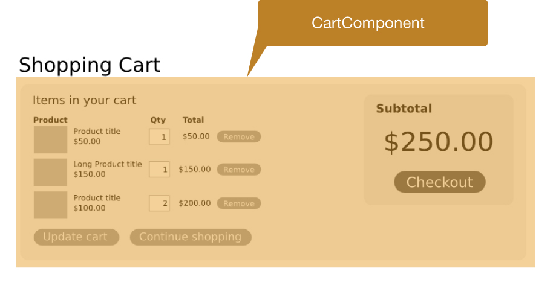
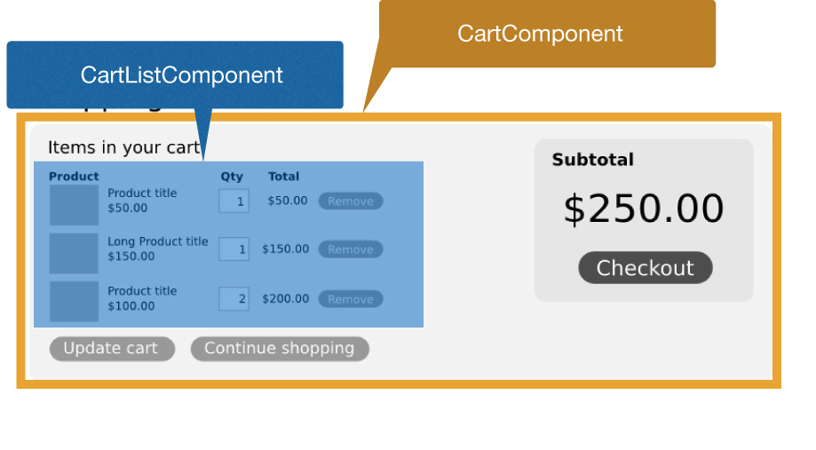
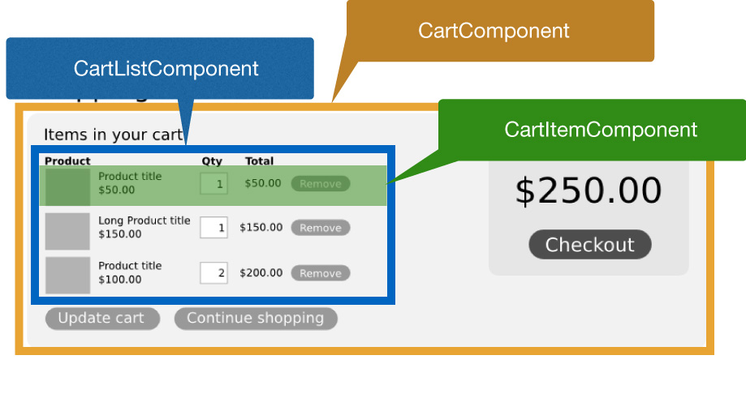
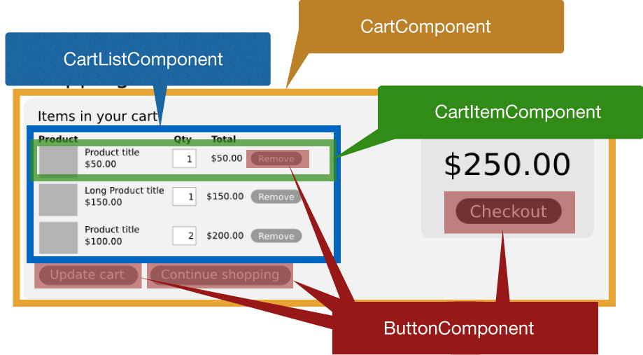

and why it's awesome
By Henk Bakker
Meet React
- A library for creating user interfaces.
- Renders your UI and responds to events.
- AKA: The V in MVC
- Plays nicely with your stack, whatever it may be.
React first impression
var LikeButton = React.createClass({
getInitialState: function() {
return {liked: false};
},
handleClick: function(event) {
this.setState({liked: !this.state.liked});
},
render: function() {
var text = this.state.liked ? 'like' : 'haven\'t liked';
return (
<p onClick={this.handleClick}>
You {text} this. Click to toggle.
</p>
);
}
});
React.render(
<LikeButton />,
document.getElementById('example')
);
WTF?!
return (
<p onClick={this.handleClick}>
You {text} this. Click to toggle.
</p>
);
“Reaction”
to React
return (
<p onClick={this.handleClick}>
You {text} this. Click to toggle.
</p>
);
-
“Ugly.”
-

“Separation of concerns!!”
-
“React is a templating language.”

“Reaction”
to React
return (
<p onClick={this.handleClick}>
You {text} this. Click to toggle.
</p>
);
-
- Don’t sweat it
- JSX
- It’s actually just Javascript
- It’s not a templating language
- If you don’t like it, you don’t hafta
React Second Impressions
- Oh! There’s 2-way data-binding, like Angular!
- Oh! It can work with Backbone. How I do?
- Oh! It can do animations and SVG!
Wait. Let’s back up.
Some Fundamentals
#1
Everything is a Component
React has no...
- ... controllers
- ... directives
- ... templates
- ... global event listeners
- ... models
- ... no view models
Just Components
What if we “separate” another way?
What if we “separate” another way?
What if we “separate” another way?
What if we “separate” another way?
What if we “separate” another way?
Separation of Concerns Components
- composable
- reusable
- maintainable
- testable
*If* Components are truly self-contained
#2
Single Source of Truth
Traditional data flows
No framework: Any component can communicate with any other component
Backbone: Pub-sub item.on('change:name', function() {…
Angular: 2-way data binding and $digest loop$scope.name = …
React: 1-way data flow
Data handed from parent to child
#3
Virtual DOM
What’s worse than having state in two places at once?
Having state in the DOM.
Touching the DOM is evil
- It’s inconsistent
- It’s hard to test
- It’s brittle
- It’s EXPENSIVE!
Back to JSX
var LikeButton = React.createClass({
getInitialState: function() {
return {liked: false};
},
handleClick: function(event) {
this.setState({liked: !this.state.liked});
},
render: function() {
var text = this.state.liked ? 'like' : 'haven\'t liked';
return (
<p onClick={this.handleClick}>
You {text} this. Click to toggle.
</p>
);
}
});
JSX Compiled
var LikeButton = React.createClass({displayName: "LikeButton",
getInitialState: function() {
return {liked: false};
},
handleClick: function(event) {
this.setState({liked: !this.state.liked});
},
render: function() {
var text = this.state.liked ? 'like' : 'haven\'t liked';
return (
React.createElement("p", {onClick: this.handleClick},
"You ", text, " this. Click to toggle."
)
);
}
});
Virtual DOM
- It’s a pure Javascript, in-memory representation of the DOM
- render() fires whenever something changes
- React modifies the real DOM to match
- It’s FAST
- It’s pure
- It just works
Why all this is awesome
- One-way data flow keeps complexity under control
- Easy to debug self-contained components
- Library doesn’t dictate too much